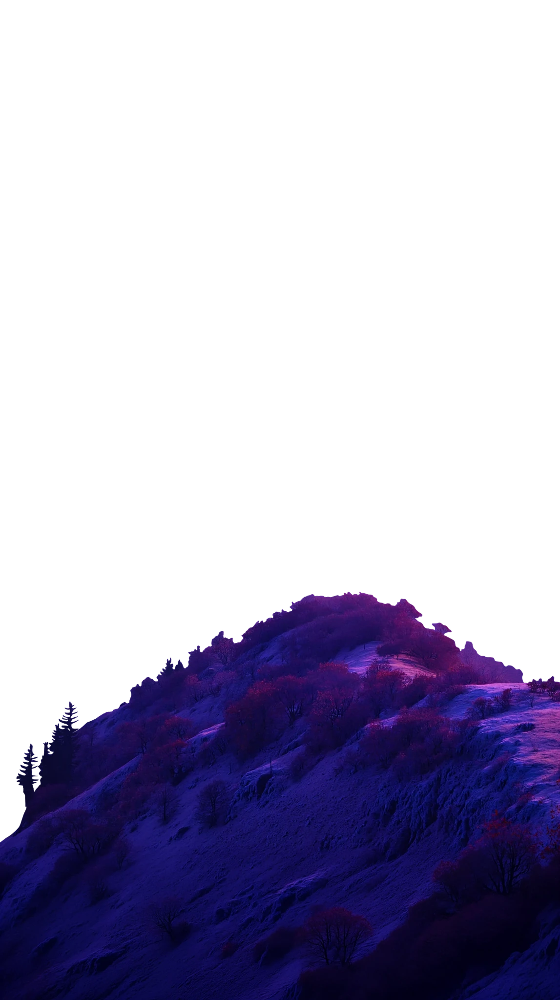
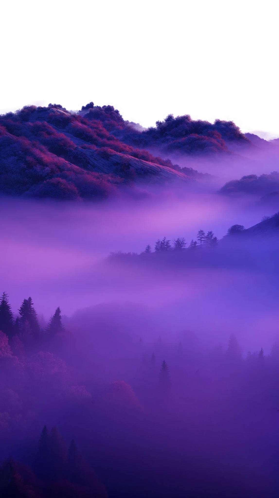

Projeto 022 — camadas
Layers in Motion
Profundidade, ritmo e espaço criados a partir de quatro imagens sobrepostas, animadas pelo ScrollSmoother.
Resultado
Quatro camadas, uma só história
Cada imagem viaja numa velocidade própria. A frente lidera o movimento, o fundo flutua — e é essa diferença que cria a ilusão de profundidade.
- 04 camadas
- 3D profundidade
- 1.6× frente / fundo